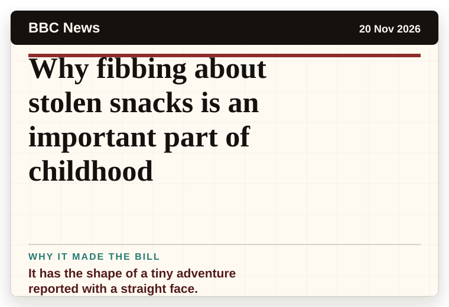
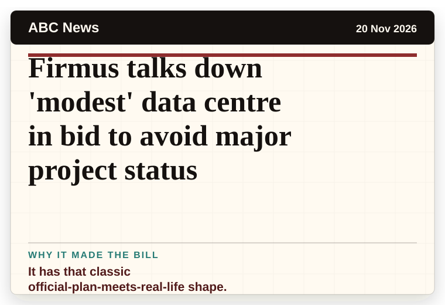
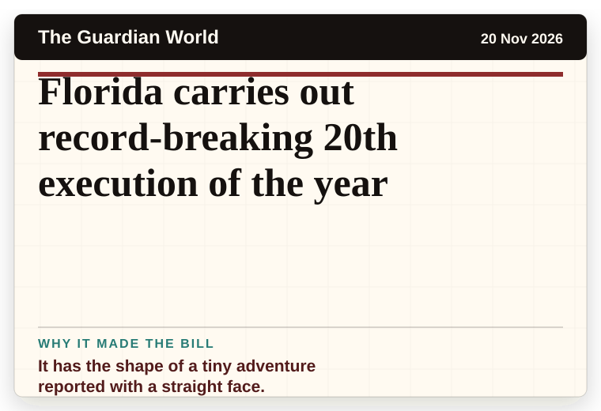
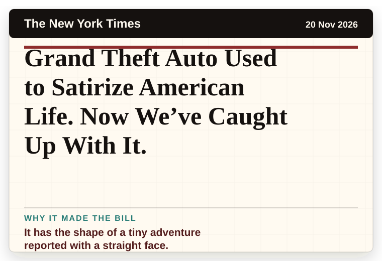
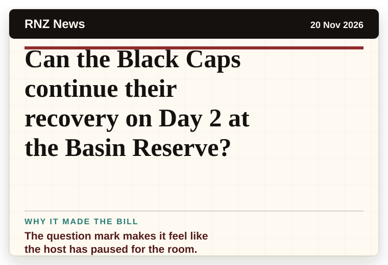

NT News
Australia
Tigers float bizarre loan move for young star amid Fogarty pursuit
The headline is already trying not to laugh.
The latest daily picks, linked back to the original sources. Search the room, pick a source, or follow a headline out to the full story.
Record updated: 20 Nov 2026, 12:28 PM AEST
Showing 14 headline candidates from the refresh run completed on 20 Nov 2026, 12:28 PM AEST.
The headline is already trying not to laugh.

It has the shape of a tiny adventure reported with a straight face.

It has the shape of a tiny adventure reported with a straight face.

The headline is already trying not to laugh.

The headline is already trying not to laugh.

The word chaos gives it open-mic energy.

It has the shape of a tiny adventure reported with a straight face.

The headline has a neat little reversal.

It has the shape of a tiny adventure reported with a straight face.

It has the shape of a tiny adventure reported with a straight face.

It has that classic official-plan-meets-real-life shape.

It has the shape of a tiny adventure reported with a straight face.

It has the shape of a tiny adventure reported with a straight face.

The question mark makes it feel like the host has paused for the room.